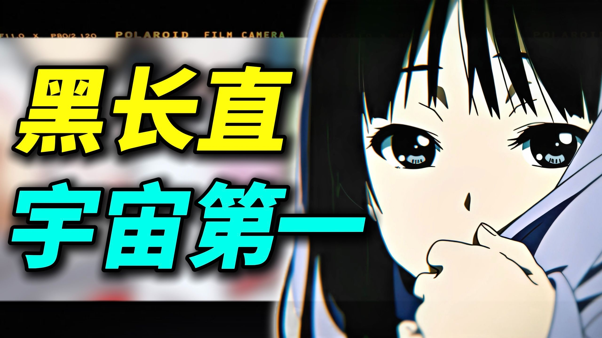

黑长直宇宙第一！ 哪位黑长直角色最令你印象深刻 本期视频是次元论战S3第一期视频 各位看得开心可以三连+关注 求求投币喵~
黑长直是黑色放射状长发的组合。
黑长直其实这个放行第一时间浮现在你脑海里的是什么...
黑长直从80年代开始独立为萌属性，并在民工漫时代批量出现。
黑长直本身在作品人设中已经独立出来成为一个单独的萌属性。
秋山澪将黑长直与软妹性格结合，形成强烈反差。
黑长直到了动画的毅力里完全换了的模样...
冬马和纱的高冷与笨拙形成探索欲，让观众共情。
陈毅微寒秋景深嫌犯无视壳家人...
千反田将黑长直的传统质感与少女的灵动好奇完美结合。
我个人认为前往的出现第一次把黑长直的传统质感与绿城烟火气息完美融合...
高坂丽奈的黑长直成为人物气质的一部分，代表执拗与韧劲。
高文明的来自吹响绑上挺好...
黑长直魅力在于与各种性格组合，产生不同质感。
其实了都是历经能看出来我们了黑长直的魅力早就跳都出了发型本身的范畴...
黑长直的核心魅力是沉淀的情感。
那么回到开的的问题如今在提起黑长直大家的时间想到的是什么...